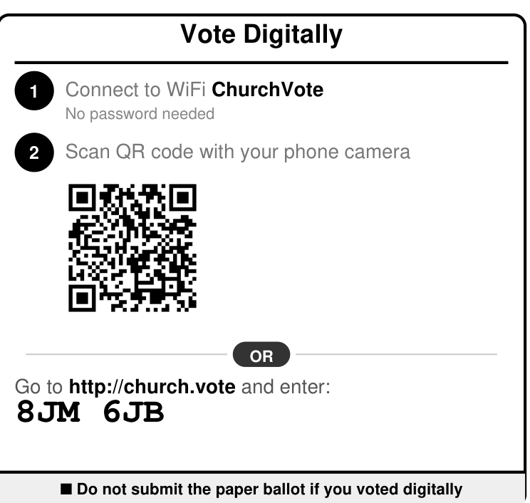
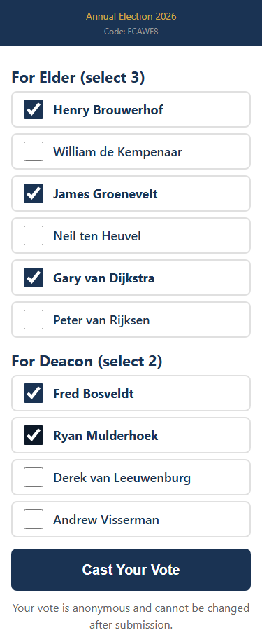

How to Vote
Office Bearer Election
Before you vote
- Sign the attendance register when you arrive.
- Wait for the chairman to open the meeting.
- You'll be handed a paper ballot and a slip with a
six-character code and a QR code for voting on your
phone.
You vote one way only - paper or phone, whichever you prefer.
Paper ballot
- Tick the box next to the candidates you choose, up to
the number the office allows ("select 2" means tick
up to two).
- Fold the card and hand it in for counting.
Phone


- Use the code slip - it tells you which WiFi to
connect to, and has a QR code to scan with your
phone's camera.
- Tick candidates for each office, up to the allowed
number. Tap Cast Your Vote.
- The confirmation screen lets you know your vote has
been registered.